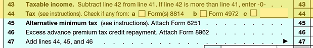

After reducing AGI by the standard or itemized deductions, and by personal and dependent exemptions, the resulting Taxable Income (line 43) is used to calculate the taxpayer's Tentative Tax, and the result is entered on line 44. View this portion of the tax return below.

Basic Tax Formula
Gross Income
Less adjustments for Adjusted Gross Income (AGI)
Adjusted Gross Income
Less the greater of:
a) Standard deduction or
b) Total itemized deductions
Less Personal and Dependency Exemption(s)
Taxable Income
Multiplied by personal tax rate
Adjusted for Alternative Minimum Tax (AMT)
Tentative Tax
Less tax credits
Plus other taxes
Equals Income Tax Liability
The marginal tax rate system is used to compute this tax. The first thing to understand about this system is that individuals will be placed in certain tax brackets (tax rates) based on their income and filing status. The 2016 federal brackets are as follows:
2016 Marginal Income Tax Rates (Brackets)
Depending upon filing status, these marginal rates are assigned to different incremental levels of Taxable Income. An individual's total taxable income will NOT all be taxed at the highest bracket reached. Rather, only the amount of income that is within the range assigned to a marginal rate will be taxed at that particular rate.
View the example below.